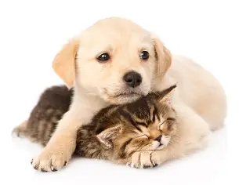

Respeto
Todo animal merece un trato digno, paciencia y protección.
Proyecto PAEC · Bienestar animal
Promovemos el respeto, el cuidado responsable y la adopción de perros y gatos que necesitan una familia.

Nuestra misión
El Proyecto de Aula, Escuela y Comunidad (PAEC) busca crear conciencia sobre las necesidades de los animales y la importancia de tratarlos con cariño y responsabilidad. A través de la adopción y la recolección de suministros, podemos contribuir a que tengan una vida más segura y saludable.
Todo animal merece un trato digno, paciencia y protección.
Adoptar significa comprometerse con su cuidado durante toda su vida.
Donar alimento y suministros ayuda a cubrir necesidades importantes.